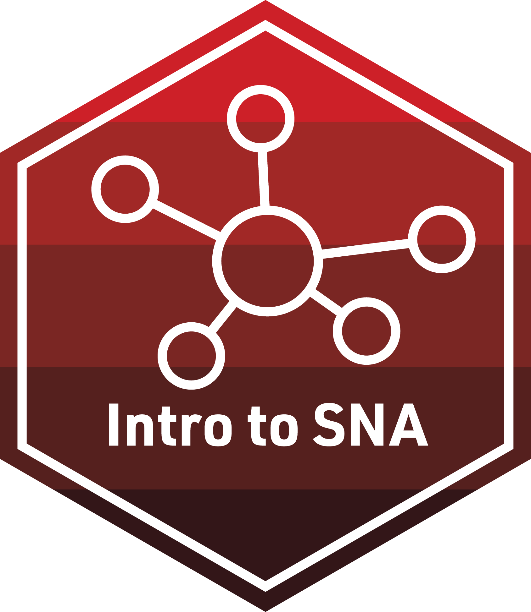
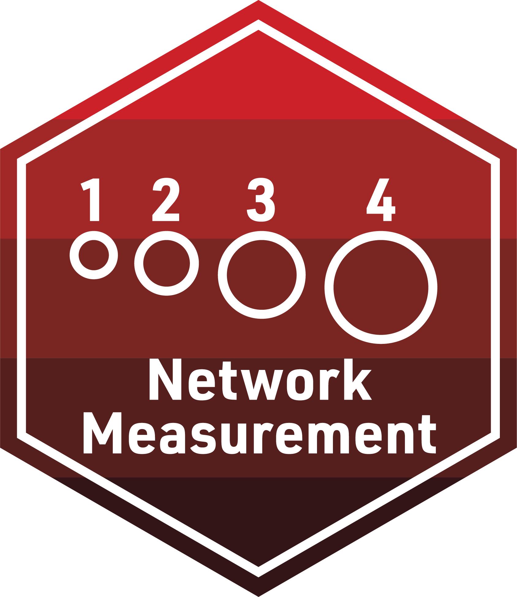
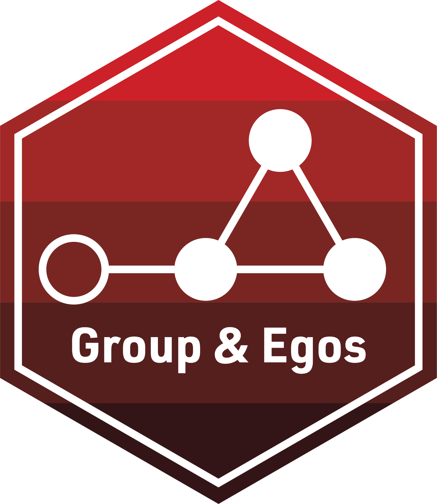

Text Mining

The transition to digital learning has made available new sources of data, providing researchers new opportunities for understanding and improving STEM learning. Data sources such as digital learning environments and administrative data systems, as well as data produced by social media websites and the mass digitization of academic and practitioner publications, hold enormous potential to address a range of pressing problems in STEM Education, but collecting and analyzing text-based data also presents unique challenges. Text mining labs address the following critical questions:
- What kinds of text data are valuable?
- How can we quantify text data?
- What kinds of research questions could be addressed with text data?
- What opportunities and challenges do large language models bring to the field of mining STEM education data?
- How can we set up a research agenda that drives innovations in STEM education research with text data?
| Github |
Repository for Instructors | |
| Posit Cloud | Workspace for Students |
Module 1: Tidy Text & Word Counts (TM Basics)
This module is a gentle introduction to getting our text “tidy” so we can perform some basic word counts, look at words that occur at a higher rate in a group of documents, examine words that are unique to those document groups, and create visualizations such as word cloud. The focus of our Essential Readings and case study in this lab is to help LASER Scholars gain a general understanding of key text mining concepts and terminology, as well as develop a basic comfort level with quantifying text data and working with text data. Our Text Mining Case Study: What aspects of online professional development offerings do teachers find most valuable? is guided by the work from Friday Institute and it examines teachers’ experiences in professional development. Finally, the Intro to Text Mining Badge provides an opportunity to create your own data product and to reflect on how these concepts and techniques might apply to your own research.
| Conceptual Overview |
||
| Code Along | ||
| Readings & Reflection |
||
| Case Study | ||
|  | Badge |
Module 2: Public Sentiment and School Reform (Dictionary Methods)
This module moves beyond basic concepts of text mining and takes a closer look at a dictionary-based text mining technique, sentiment analysis. Our Essential Readings examine the topic of opinion mining or sentiment analysis. This technique is very helpful for us to understand people’s opinions about things such as a policy. Our Text mining Case Study: Do the public like NGSS? investigates the public sentiment expressed toward the Next Generation Science Standards (NGSS) and compares the sentiment for NGSS and Common Core State Standards using X (twitter) data. This study by Rosenberg et al. (2021) can be found at https://osf.io/xymsd/. Finally, the Sentiment Analysis Badge provides an opportunity to create your own data product and to reflect on how these concepts and techniques might apply to your own research.
| Conceptual Overview |
||
| Code Along | ||
| Readings & Reflection |
||
| Case Study | ||
|  | Badge |
Module 3: Large Language Models for Qualitative Analysis
This module wraps up our work with text mining and examines recent advances in using large language models to code qualitative data (i.e., interview transcripts, group discussions, and open-ended responses). Through our essential readings, we’ll learn about this technique. Our Text Mining Case Study: What are high school students’ machine learning literacy before and after participating in an AI curriculum? is inspired by the need to assess machine learning literacy and use automated assessment for real-time intervention in the field of AI education. Finally, the Large Language Model Badge provides an opportunity to create your own data product and to reflect on how these concepts and techniques might apply to your own research.
| Conceptual Overview |
||
| Code Along | ||
| Readings & Discussion |
||
| Case Study | ||
|  | Badge |
Module 4: Topic Modeling in MOOC-Eds
This module focuses on identifying “topics” by examining how words cohere into different latent, or hidden, themes based on patterns of co-occurrence of words within documents. Our Essential Readings introduces this unsupervised machine learning technique. Our Text Mining Case Study: What are participants discussing in forums? is guided by the work from Friday Institute and it explores ideas or issues that emerged in the discussion forums in a MOOC-ed course. You can learn more about the work here (https://www.learntechlib.org/p/195234/). Finally, the Topic Modeling Badge provides an opportunity to create your own data product and to reflect on how these concepts and techniques might apply to your own research.
| Conceptual Overview |
||
| Code Along | ||
| Readings & Discussion |
||
| Case Study | ||
| Badge |
Microcredential
The culminating activity for the TM Modules is designed to provide you some space for independent analysis of a self-identified data source. To earn your TM Microcredential, you must demonstrate your ability to formulate a relevant research question for text mining, effectively manage and analyze text data, and clearly communicate your key findings. Your primary goal for this analysis is to create a simple data product that illustrates key findings by applying the knowledge and skills acquired from the essential readings and case studies.
| Microcredential |